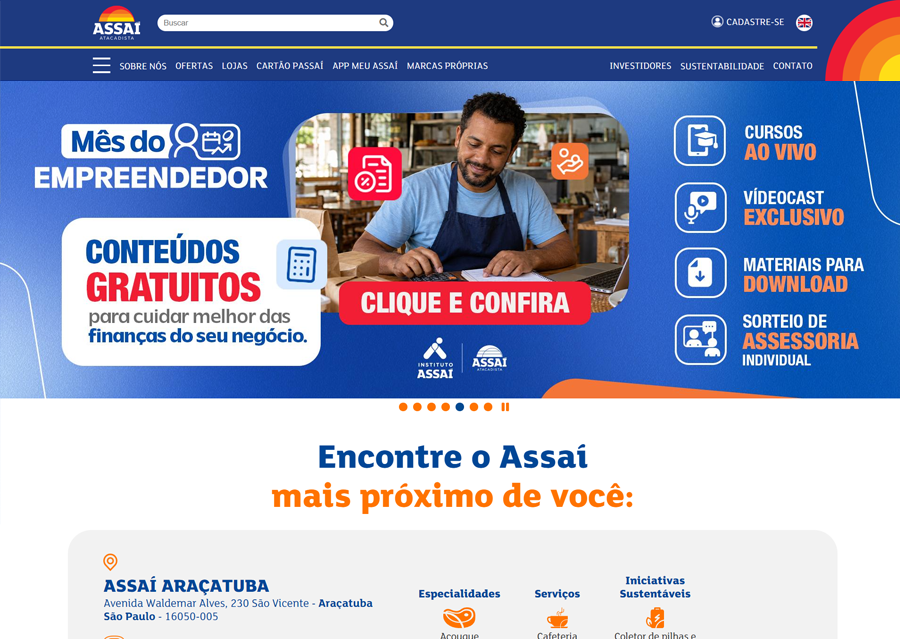

Software para Dispositivos Móveis
UTFPR
Arquitetura, experiência do usuário (UX), performance e otimização de sistemas complexos.
Front End Developer & UI Designer
Designer gráfico que migrou para a web quando isso aqui ainda era tudo mato. Desde 2007 eu desenho e construo interfaces, e hoje lidero um time de 5 desenvolvedores.
Prancha 01 Assinatura principal
Do impresso ao front end. Dezenove anos entre design, código e gente, em ordem de aplicação.
Do conceito à arte final de campanhas de vestibular: anúncios de revista, outdoors, banners e folders.
A virada para a web. Ajudei a construir uma vitrine de recomendação de produtos para e-commerce que pesava dezenas de variáveis.
O Grupo Buscapé comprou a eBehavior pela tecnologia de recomendação. Fui promovido e entrei no time de novas tecnologias do comparador.
Minha própria agência de marketing digital: design, desenvolvimento web e social media por quase 3 anos.
Lidero 5 desenvolvedores numa agência de publicidade. Defino tecnologias, prazos e coordeno projetos para Assaí, Muffato, McDonald's, Lojas Americanas e Subway.
AtualDuas passagens pela UTFPR: uma pelo design, outra pelo software.
UTFPR
Arquitetura, experiência do usuário (UX), performance e otimização de sistemas complexos.
UTFPR
Projetos gráficos, identidade visual, branding e marketing estratégico.
Sites e produtos que desenhei e desenvolvi. Escolha no índice ou use as setas do teclado.

As mesmas ferramentas servem ao layout e ao código.
--white--black--blue--blue-deep--blue-mist--softSei lidar com clientes exigentes, chefe estressado, designers emocionados e devs que falam pouco.